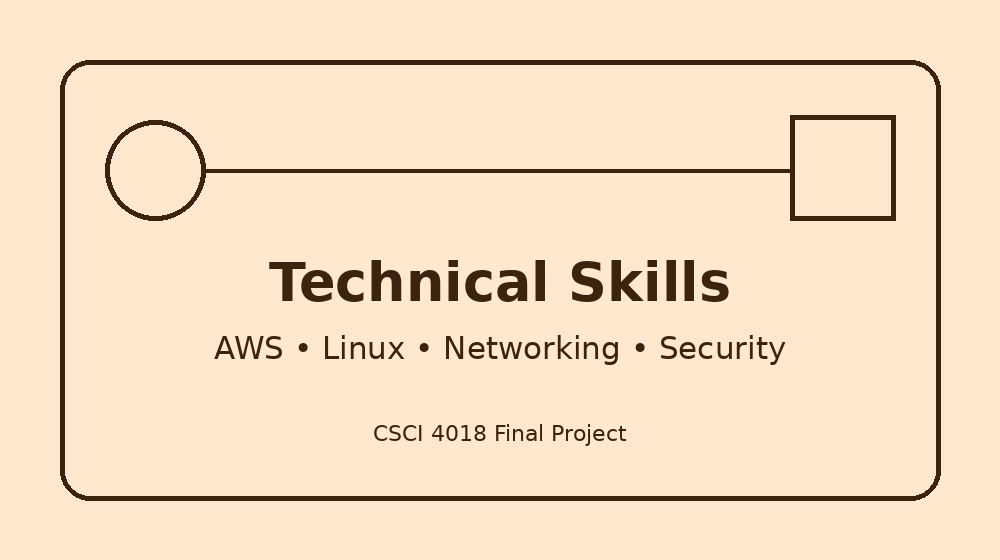

Current Technical Skills

The following table lists technical skills that I am developing through coursework, labs, professional experience, and independent practice. These skills are useful for computing, cloud computing, cybersecurity, and systems administration roles.
| Skill | Skill Level |
|---|---|
| AWS cloud services including EC2, IAM, VPC, S3, EBS, Lambda, Elastic Beanstalk, and Auto Scaling | Intermediate |
| Linux system administration using CentOS Stream, Kali Linux, command-line tools, permissions, users, groups, and services | Intermediate |
| Virtualization using VMware Workstation Pro and multiple virtual machines | Intermediate |
| Network security concepts including cryptography, authentication, Kerberos, certificates, and secure protocols | Intermediate |
| Web server configuration using Apache and nginx | Beginner |
| HTML and CSS for building basic web pages | Beginner |
| Git, GitHub, and GitHub Desktop for version control | Beginner |
| Windows Server 2022 and basic server administration | Beginner |
| Python programming and scripting fundamentals | Beginner |
| IDS/IPS concepts and hands-on security lab experience with tools such as Snort | Beginner |